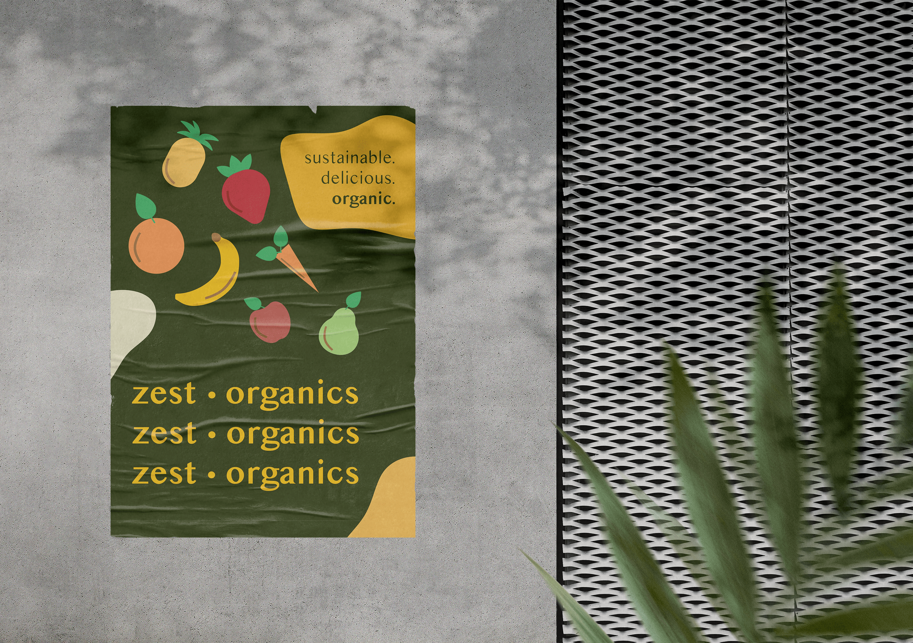
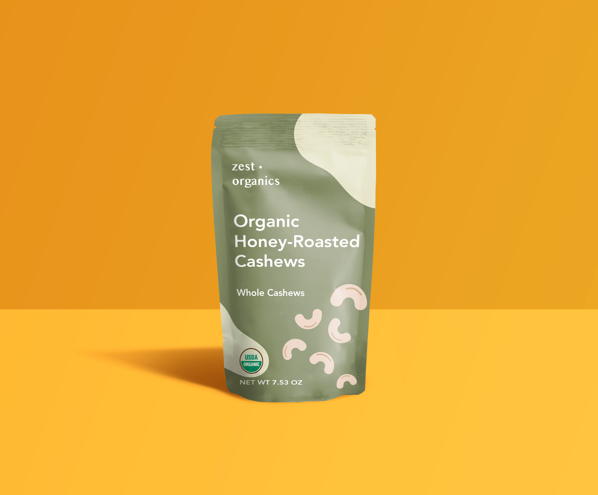
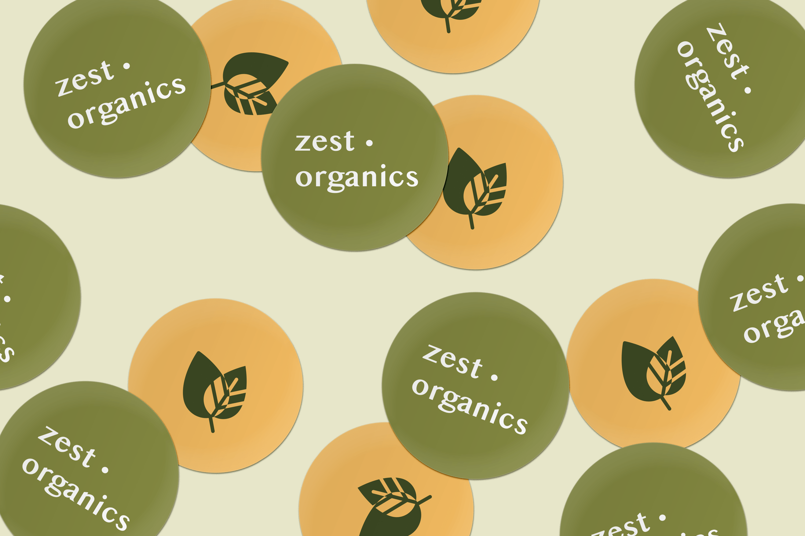
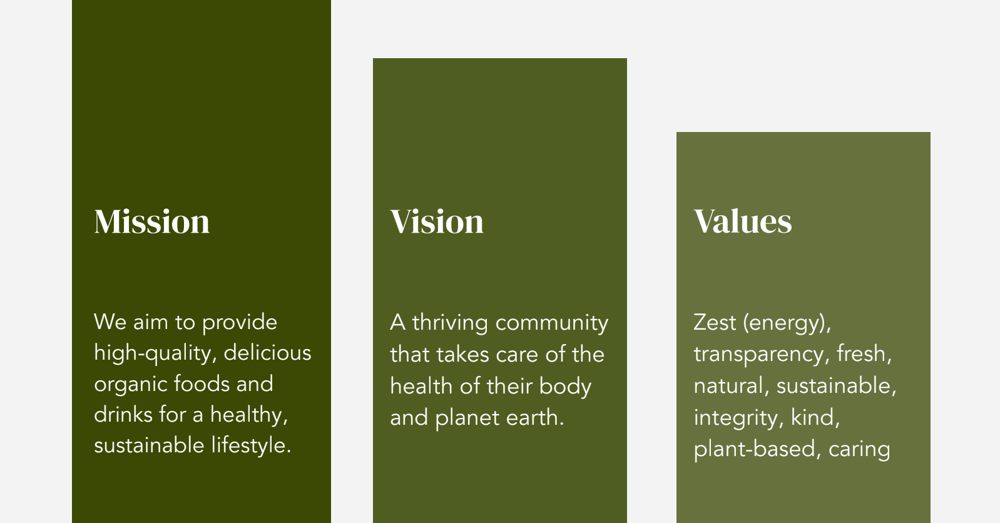
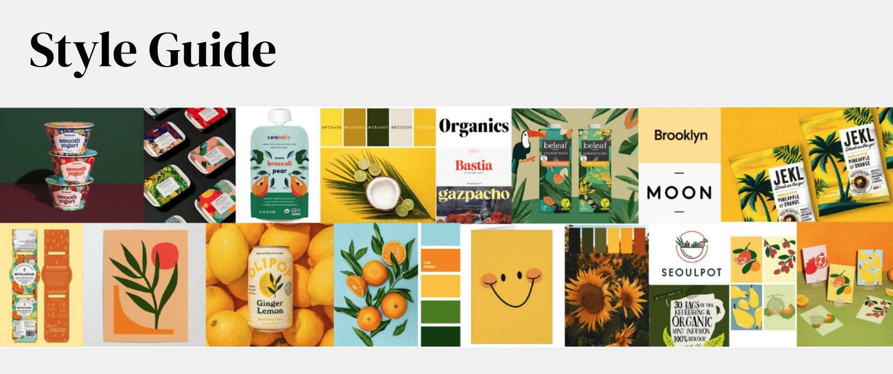
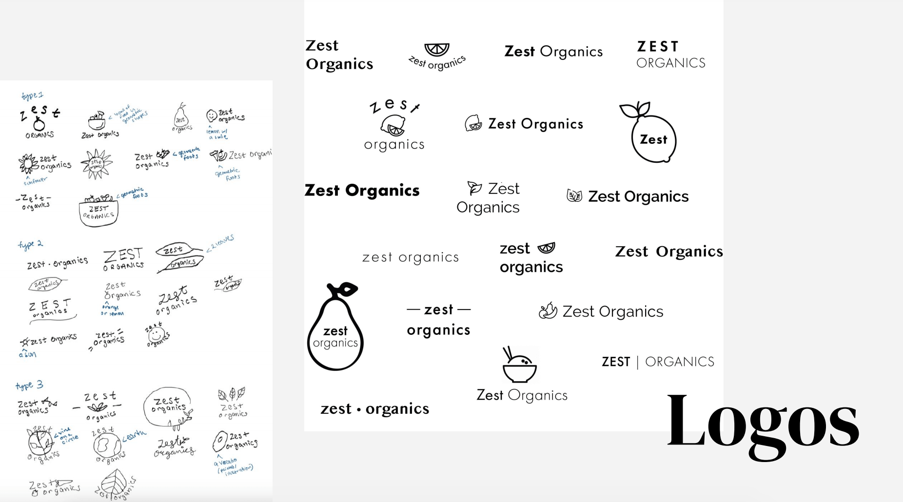
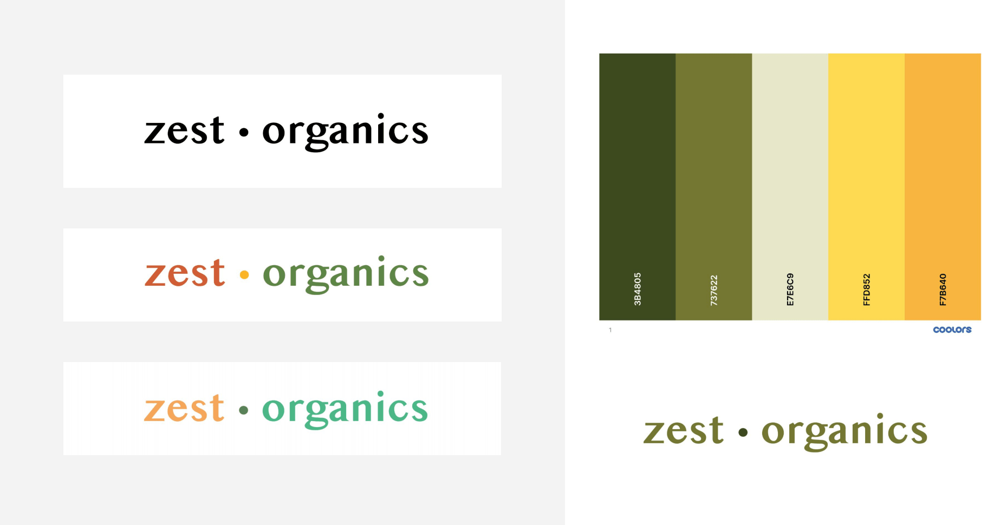

Zest Organics
Brand identity and visual design exploration of an organic food brand
1 month






Process
I started with defining the mission, vision, and values for Zest Organics.

Next, I created a style guide using Pinterest images. I chose an illustrative style for the foods in my assets, as it felt more friendly & playful than real pictures of food or see-through packaging.

Here are some logo explorations:

For my logo design, I went with a very minimal look that can be easily adapted to various products and marketing assets. I didn't include a food icon in the logo, because the brand encompasses a lot of different types of foods and drinks - I didn't want to be recognized by just one.
I ended up choosing a color scheme that had an earthy-feel to it, while still having the occasional pop of color. After all, I used the word "Zest" in my brand to emphasize energy and delight.

This was an extremely educational and enjoyable process! I became more comfortable with
Photoshop and Illustrator, and now can create product mockups. I also learned the importance of establishing a cohesive brand identity.
< previous project - joinIn